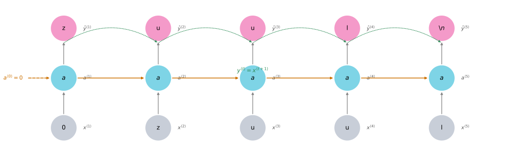
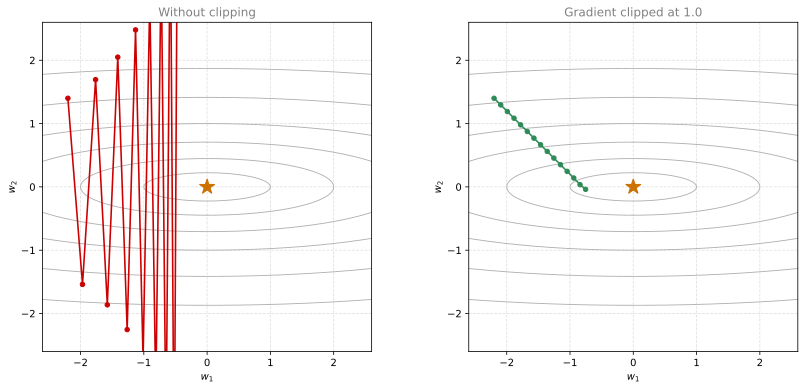
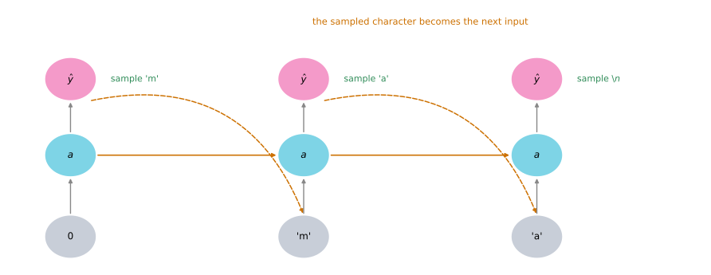

import numpy as np
import random
import pprint
import copy
DATA = "../../../media/deep-learning/character-level-language-model/"Lab: Character Level Language Model
deep-learning
sequence-models
rnn
language-model
gradient-clipping
sampling
lstm
keras
lab
Train a character-level RNN on a list of dinosaur names, with gradient clipping and sampling written in NumPy, then generate poetry from a stacked LSTM.
This is the second assignment of Course 5, and the first one that trains a model rather than only running a forward pass. The task is to invent dinosaur names. A list of names that real paleontologists have already used becomes the training set, a character-level recurrent network learns the patterns inside it, and sampling from that trained network produces names nobody has seen before.
By the end of this lab you will be able to
- store text data for processing by an RNN,
- build a character-level text generation model,
- sample novel sequences from a trained RNN,
- explain the exploding gradient problem and apply gradient clipping as the fix.
The previous lab built the RNN and LSTM forward and backward passes by hand. Those functions come back here as given helpers, so the code you write is the part that turns them into a working language model. Three pieces are new. Gradient clipping keeps the updates from exploding, sampling turns a trained network into a generator, and the optimization loop ties everything together.
Packages
Four imports carry the lab, and none of them is a deep learning framework. The dinosaur model is plain NumPy from end to end.
DATA is the folder holding the dataset and the helper module the assignment ships with, so every path below is written once and reused.
NoteLab Files Download
Everything this lab needs, ready to download.
- dinos.txt (19 KB), the training set of 1536 dinosaur names, one per line.
- utils.py (5 KB), the helper module the notebook imports. It holds
softmax, the forward and backward passes over a sequence, the parameter update, and the loss smoothing. - shakespeare.txt (94 KB), the collection of Shakespeare sonnets used in the final section.
- model_shakespeare_kiank_350_epoch.h5 (2.7 MB), the stacked LSTM already trained on those sonnets for roughly 1000 epochs.
- shakespeare_utils.py (5 KB), the original helper module for that final section. The page does not import it, for the reasons given in Writing Like Shakespeare, but it is here because it is part of the original lab.
Dataset and Preprocessing
The dataset is a plain text file with one dinosaur name per line. Reading it and lowercasing it gives a single long string, and the set of characters appearing in that string is the vocabulary.
data = open(DATA + "dinos.txt", "r").read()
data = data.lower()
chars = list(set(data))
data_size, vocab_size = len(data), len(chars)
print("There are %d total characters and %d unique characters in your data." % (data_size, vocab_size))There are 19909 total characters and 27 unique characters in your data.The 27 characters are the 26 letters a to z plus the newline. That newline is doing real work. It plays the role of the end-of-sentence token from the character-level language model lecture, except that here it marks the end of a name rather than the end of a sentence. Training the network to predict it is what teaches the model when to stop.
A model cannot consume characters, only numbers, so two dictionaries translate in both directions. char_to_ix maps a character to an index from 0 to 26, and ix_to_char maps the index back. Sorting the character list first is what makes the mapping reproducible, because a Python set has no guaranteed order.
chars = sorted(chars)
print(chars)['\n', 'a', 'b', 'c', 'd', 'e', 'f', 'g', 'h', 'i', 'j', 'k', 'l', 'm', 'n', 'o', 'p', 'q', 'r', 's', 't', 'u', 'v', 'w', 'x', 'y', 'z']char_to_ix = { ch:i for i,ch in enumerate(chars) }
ix_to_char = { i:ch for i,ch in enumerate(chars) }
pp = pprint.PrettyPrinter(indent=4)
pp.pprint(ix_to_char){ 0: '\n',
1: 'a',
2: 'b',
3: 'c',
4: 'd',
5: 'e',
6: 'f',
7: 'g',
8: 'h',
9: 'i',
10: 'j',
11: 'k',
12: 'l',
13: 'm',
14: 'n',
15: 'o',
16: 'p',
17: 'q',
18: 'r',
19: 's',
20: 't',
21: 'u',
22: 'v',
23: 'w',
24: 'x',
25: 'y',
26: 'z'}Index 0 is the newline, because it sorts before every letter. That detail matters later, when the softmax output vector is indexed to find the probability that the name ends right here.
Overview of the Model
The model reads one character at a time and, at every time step, tries to predict the character that comes next. Written as sequences, the input is \(X = (x^{\langle 1 \rangle}, x^{\langle 2 \rangle}, \ldots, x^{\langle T_x \rangle})\), a list of characters from the training set, and the label is \(Y = (y^{\langle 1 \rangle}, y^{\langle 2 \rangle}, \ldots, y^{\langle T_x \rangle})\), the same list shifted one character forward. At every time step \(t\), \(y^{\langle t \rangle} = x^{\langle t+1 \rangle}\), so the target at time \(t\) is simply the input at time \(t+1\).
On a small screen, scroll horizontally to inspect the complete diagram.

The first input is the zero vector rather than a character, because at the first time step there is nothing to condition on yet. From then on the network is fed the real character at each position and asked for the next one, and the last thing it must predict is the newline.
Training the whole thing has the structure of any other model in the course. Initialize the parameters, then repeat a loop that forward propagates to compute the loss, backward propagates to compute the gradients, clips those gradients, and updates the parameters with the gradient descent rule. The two blocks built next are the clipping step and the sampling procedure that turns the trained parameters back into text.
Building Blocks of the Model
Two functions have to exist before the training loop can be written. Gradient clipping keeps the parameter updates under control, and sampling reads text out of the trained parameters.
Clipping Gradients in the Optimization Loop
Recurrent networks suffer from exploding gradients as well as vanishing ones. When the gradient is very large, the update \(w := w - \alpha \, dw\) moves so far that it overshoots the minimum entirely, and the next gradient is larger still. A few iterations of that and the parameters are filled with NaN.
Clipping is the standard fix. Before the update, every entry of every gradient is forced back into a range \([-N, N]\). An entry above \(N\) becomes \(N\), an entry below \(-N\) becomes \(-N\), and anything already inside the range is left alone. The direction of the step changes somewhat, because the components are rescaled unevenly, but the length of the step is now bounded, which is what stops the divergence.

The clip function takes the dictionary of gradients and a maximum value, and returns the clipped dictionary.
Two details in the implementation are worth attention. The function starts with copy.deepcopy, so the caller’s dictionary is not modified behind its back. Then np.clip is called with out=gradient, which writes the result back into the same array rather than returning a new one. Without out, the clipped array would be assigned to the loop variable and thrown away at the next iteration, leaving the real gradients untouched.
def clip(gradients, maxValue):
'''
Clips the gradients' values between minimum and maximum.
Arguments:
gradients -- a dictionary containing the gradients "dWaa", "dWax", "dWya", "db", "dby"
maxValue -- everything above this number is set to this number,
and everything less than -maxValue is set to -maxValue
Returns:
gradients -- a dictionary with the clipped gradients.
'''
gradients = copy.deepcopy(gradients)
dWaa, dWax, dWya, db, dby = gradients['dWaa'], gradients['dWax'], gradients['dWya'], gradients['db'], gradients['dby']
# Clip to mitigate exploding gradients, in place, one array at a time.
for gradient in [dWax, dWaa, dWya, db, dby]:
np.clip(gradient, -maxValue, maxValue, out=gradient)
gradients = {"dWaa": dWaa, "dWax": dWax, "dWya": dWya, "db": db, "dby": dby}
return gradientsRunning it on random gradients scaled by 10 shows both halves of the behavior. Entries that were far outside the range come back sitting exactly on the boundary, and entries that were already inside are untouched.
np.random.seed(3)
dWax = np.random.randn(5, 3) * 10
dWaa = np.random.randn(5, 5) * 10
dWya = np.random.randn(2, 5) * 10
db = np.random.randn(5, 1) * 10
dby = np.random.randn(2, 1) * 10
gradients = {"dWax": dWax, "dWaa": dWaa, "dWya": dWya, "db": db, "dby": dby}
for maxValue in [10, 5]:
clipped = clip(gradients, maxValue)
print(f"Gradients for maxValue={maxValue}")
print('gradients["dWaa"][1][2] =', clipped["dWaa"][1][2])
print('gradients["dWax"][3][1] =', clipped["dWax"][3][1])
print('gradients["dWya"][1][2] =', clipped["dWya"][1][2])
print('gradients["db"][4] =', clipped["db"][4])
print('gradients["dby"][1] =', clipped["dby"][1])
lo = min(np.min(v) for v in clipped.values())
hi = max(np.max(v) for v in clipped.values())
print(f"range across all five gradients = [{lo}, {hi}]\n")Gradients for maxValue=10
gradients["dWaa"][1][2] = 10.0
gradients["dWax"][3][1] = -10.0
gradients["dWya"][1][2] = 0.2971381536101662
gradients["db"][4] = [10.]
gradients["dby"][1] = [8.45833407]
range across all five gradients = [-10.0, 10.0]
Gradients for maxValue=5
gradients["dWaa"][1][2] = 5.0
gradients["dWax"][3][1] = -5.0
gradients["dWya"][1][2] = 0.2971381536101662
gradients["db"][4] = [5.]
gradients["dby"][1] = [5.]
range across all five gradients = [-5.0, 5.0]
Read the two blocks against each other. dWaa[1][2] was above 10, so it is 10.0 in the first block and 5.0 in the second, pinned to whichever boundary applies. dWax[3][1] was below the negative boundary and gets the same treatment on the other side. dWya[1][2] is about 0.297, comfortably inside both ranges, so it is identical in both blocks. The printed range confirms the guarantee the function exists to provide, which is that nothing survives outside \([-N, N]\).
Notice also that gradients itself still holds the original unclipped values, since the two calls above both start from it and produce different results. That is copy.deepcopy doing its job.
Sampling
Assume for a moment the model is already trained. Generating a new name is a loop that feeds the network its own output.

The procedure has four steps.
Step 1 starts the sequence with a dummy input, \(x^{\langle 1 \rangle} = 0\), and a zero initial hidden state, \(a^{\langle 0 \rangle} = 0\). There is no character to condition on yet, so both are vectors of zeros.
Step 2 runs one step of forward propagation, which is the same arithmetic as the previous lab.
\[ a^{\langle t+1 \rangle} = \tanh(W_{ax} x^{\langle t+1 \rangle} + W_{aa} a^{\langle t \rangle} + b) \]
\[ z^{\langle t+1 \rangle} = W_{ya} a^{\langle t+1 \rangle} + b_y \]
\[ \hat{y}^{\langle t+1 \rangle} = \text{softmax}(z^{\langle t+1 \rangle}) \]
The result \(\hat{y}^{\langle t+1 \rangle}\) is a probability vector with 27 entries that sum to one, where entry \(i\) is the probability that the next character is the one with index \(i\).
Step 3 draws a character from that distribution. Taking the most probable character every time would make the model deterministic, so a given first letter would always produce exactly the same name. Instead np.random.choice draws index \(i\) with probability \(\hat{y}^{\langle t+1 \rangle}_i\), which keeps the output varied while still respecting what the model learned. The probability vector is 2D of shape \((27, 1)\), and np.random.choice needs a 1D vector, which is what .ravel() provides.
Step 4 overwrites the input with a one-hot vector for the character just drawn, so the next iteration is conditioned on it. The loop repeats until a newline is drawn, or until 50 characters have been generated, which is a safety valve for an untrained model that might never produce a newline at all.
def softmax(x):
"""Softmax over the whole array, as shipped in the lab's utils module."""
e_x = np.exp(x - np.max(x))
return e_x / e_x.sum(axis=0)
def sample(parameters, char_to_ix, seed):
"""
Sample a sequence of characters according to a sequence of probability
distributions output of the RNN.
Arguments:
parameters -- Python dictionary containing the parameters Waa, Wax, Wya, by, and b.
char_to_ix -- Python dictionary mapping each character to an index.
seed -- fixes the draws, so a given call always returns the same name.
Returns:
indices -- A list of length n containing the indices of the sampled characters.
"""
# Retrieve parameters and relevant shapes from "parameters" dictionary
Waa, Wax, Wya, by, b = parameters['Waa'], parameters['Wax'], parameters['Wya'], parameters['by'], parameters['b']
vocab_size = by.shape[0]
n_a = Waa.shape[1]
# Step 1: Create the zero vector x used as the one-hot input of the first
# character, and the zero initial hidden state.
x = np.zeros((vocab_size, 1))
a_prev = np.zeros((n_a, 1))
# The list of indices of the characters generated so far.
indices = []
# idx is the index of the entry of x that is set to 1. All others are zero.
idx = -1
counter = 0
newline_character = char_to_ix['\n']
while (idx != newline_character and counter != 50):
# Step 2: Forward propagate x through one time step.
a = np.tanh(np.dot(Wax, x) + np.dot(Waa, a_prev) + b)
z = np.dot(Wya, a) + by
y = softmax(z)
# Fix the draw of this time step, so the whole name is reproducible.
np.random.seed(counter + seed)
# Step 3: Draw the index of the next character from the distribution y.
idx = np.random.choice(range(vocab_size), p=y.ravel())
indices.append(idx)
# Step 4: Overwrite the input with the one-hot vector of the drawn index.
x = np.zeros((vocab_size, 1))
x[idx] = 1
# Pass the hidden state on to the next time step.
a_prev = a
seed += 1
counter += 1
# Force an ending if the loop hit the 50 character safety valve.
if (counter == 50):
indices.append(char_to_ix['\n'])
return indicesThe seed argument deserves a word, because it is unusual to see one inside a model function. Reseeding at every time step makes a given call to sample return the same name every time, which is what keeps the training output on this page stable across renders. A production sampler would simply not reseed, and would produce a different name on every call.
Sampling from untrained parameters shows what the function does before the model knows anything.
np.random.seed(24)
n_a = 100
Wax, Waa, Wya = np.random.randn(n_a, vocab_size), np.random.randn(n_a, n_a), np.random.randn(vocab_size, n_a)
b, by = np.random.randn(n_a, 1), np.random.randn(vocab_size, 1)
parameters_tmp = {"Wax": Wax, "Waa": Waa, "Wya": Wya, "b": b, "by": by}
indices = sample(parameters_tmp, char_to_ix, 0)
print("list of sampled indices:\n", [int(i) for i in indices])
print("list of sampled characters:\n", [ix_to_char[i] for i in indices])
print("length =", len(indices), "and last character is a newline:", indices[-1] == char_to_ix['\n'])list of sampled indices:
[23, 16, 26, 26, 24, 3, 21, 1, 7, 24, 15, 3, 25, 20, 6, 13, 10, 8, 20, 12, 2, 0]
list of sampled characters:
['w', 'p', 'z', 'z', 'x', 'c', 'u', 'a', 'g', 'x', 'o', 'c', 'y', 't', 'f', 'm', 'j', 'h', 't', 'l', 'b', '\n']
length = 22 and last character is a newline: TrueThe result is gibberish, which is the correct outcome. These weights are random, so the softmax is close to arbitrary and the draws carry no structure. Two things are already right, though. The sequence ended on its own by drawing a newline rather than running into the 50 character limit, and every index lies inside the vocabulary, because np.random.choice can only return a position of the probability vector it was given.
The int(i) in the first print is only there for readability. NumPy 2 prints its integer scalars as np.int64(23), which makes a long list hard to read, and the conversion does not change the values.
NoteWhat You Should Remember
- Very large, or exploding, gradient updates can overshoot the optimal values during backpropagation, which makes training difficult.
- Clip the gradients before updating the parameters to avoid this.
- Sampling picks the index of the next character according to a probability distribution, rather than always taking the most probable one.
- To sample, feed a dummy vector of zeros as the first input, run one step of forward propagation, draw from the resulting distribution with
np.random.choice, and feed the drawn character back in as the next input.
Review Questions
1. Why does clip pass out=gradient to np.clip instead of writing gradient = np.clip(gradient, -maxValue, maxValue)?
Answer
Because the assignment form would rebind only the loop variable. The loop iterates over [dWax, dWaa, dWya, db, dby], so gradient is a name pointing at one of those arrays. Assigning to it makes it point at a new array instead, and the original array, which is what gets packed into the returned dictionary, keeps its unclipped values. Passing out=gradient writes the clipped values into the existing array in place, so the change is visible through every other reference to it.
1. Sampling draws from the softmax distribution instead of taking np.argmax. What would go wrong with argmax?
Answer
The model would become deterministic. Every call starts from the same zero input and the same zero hidden state, so the first character would always be identical, and each following character would be the single most probable continuation. The model would emit exactly one name, no matter how many times it was called. Drawing from the distribution lets the generator explore the many continuations the model considers plausible, which is the entire point of using it to invent names.
1. The while loop stops at 50 characters as well as on a newline. When does that second condition actually fire?
Answer
Early in training, when the model has not yet learned that names end. An untrained network gives the newline roughly the same probability as any other character, so a run of draws can easily go 50 steps without hitting it. Once the model has been trained the newline becomes far more likely after a plausible ending, and the loop almost always exits on its own. The counter is a safety valve that keeps a bad model from generating forever, and the if (counter == 50) line afterwards appends a newline so the caller always receives a properly terminated name.
Building the Language Model
The two blocks above become a language model once they are wrapped in an optimization loop.
Helper Functions From the Previous Assignment
The forward and backward passes over a sequence are given here rather than rewritten, because the previous lab built them line by line. Read them if the training loop below looks mysterious, and skip them otherwise. rnn_forward runs the network over one name and returns the cross-entropy loss, rnn_backward runs backpropagation through time and returns the gradients, and update_parameters applies the gradient descent rule.
NoteHelper Functions Shipped With the Assignment
def smooth(loss, cur_loss):
"""Exponentially weighted average of the loss, so the printed curve is readable."""
return loss * 0.999 + cur_loss * 0.001
def get_initial_loss(vocab_size, seq_length):
"""Loss of a model that guesses uniformly, used to start the smoothing."""
return -np.log(1.0 / vocab_size) * seq_length
def get_sample(sample_ix, ix_to_char):
"""Turn a list of sampled indices into a capitalized string."""
txt = ''.join(ix_to_char[ix] for ix in sample_ix)
txt = txt[0].upper() + txt[1:]
return txt
def initialize_parameters(n_a, n_x, n_y):
"""Initialize the five parameters with small random values."""
np.random.seed(1)
Wax = np.random.randn(n_a, n_x) * 0.01 # input to hidden
Waa = np.random.randn(n_a, n_a) * 0.01 # hidden to hidden
Wya = np.random.randn(n_y, n_a) * 0.01 # hidden to output
b = np.zeros((n_a, 1)) # hidden bias
by = np.zeros((n_y, 1)) # output bias
return {"Wax": Wax, "Waa": Waa, "Wya": Wya, "b": b, "by": by}
def rnn_step_forward(parameters, a_prev, x):
"""One time step forward, hidden state then softmax over the vocabulary."""
Waa, Wax, Wya, by, b = parameters['Waa'], parameters['Wax'], parameters['Wya'], parameters['by'], parameters['b']
a_next = np.tanh(np.dot(Wax, x) + np.dot(Waa, a_prev) + b)
p_t = softmax(np.dot(Wya, a_next) + by)
return a_next, p_t
def rnn_step_backward(dy, gradients, parameters, x, a, a_prev):
"""One time step of backpropagation, accumulating into the gradient dictionary."""
gradients['dWya'] += np.dot(dy, a.T)
gradients['dby'] += dy
da = np.dot(parameters['Wya'].T, dy) + gradients['da_next'] # backprop into a
daraw = (1 - a * a) * da # backprop through the tanh
gradients['db'] += daraw
gradients['dWax'] += np.dot(daraw, x.T)
gradients['dWaa'] += np.dot(daraw, a_prev.T)
gradients['da_next'] = np.dot(parameters['Waa'].T, daraw)
return gradients
def update_parameters(parameters, gradients, lr):
"""Gradient descent update, applied to all five parameters."""
parameters['Wax'] += -lr * gradients['dWax']
parameters['Waa'] += -lr * gradients['dWaa']
parameters['Wya'] += -lr * gradients['dWya']
parameters['b'] += -lr * gradients['db']
parameters['by'] += -lr * gradients['dby']
return parameters
def rnn_forward(X, Y, a0, parameters, vocab_size=27):
"""Forward propagate over one name and accumulate the cross-entropy loss."""
x, a, y_hat = {}, {}, {}
a[-1] = np.copy(a0)
loss = 0
for t in range(len(X)):
# One-hot the t-th character. X[t] is None at the first step, which
# leaves x[t] as the zero vector.
x[t] = np.zeros((vocab_size, 1))
if (X[t] != None):
x[t][X[t]] = 1
a[t], y_hat[t] = rnn_step_forward(parameters, a[t - 1], x[t])
# Subtract the cross-entropy term of this time step.
loss -= np.log(y_hat[t][Y[t], 0])
cache = (y_hat, a, x)
return loss, cache
def rnn_backward(X, Y, parameters, cache):
"""Backpropagate through time over one name."""
gradients = {}
(y_hat, a, x) = cache
Waa, Wax, Wya, by, b = parameters['Waa'], parameters['Wax'], parameters['Wya'], parameters['by'], parameters['b']
# Each gradient starts at zeros of the same shape as its parameter.
gradients['dWax'], gradients['dWaa'], gradients['dWya'] = np.zeros_like(Wax), np.zeros_like(Waa), np.zeros_like(Wya)
gradients['db'], gradients['dby'] = np.zeros_like(b), np.zeros_like(by)
gradients['da_next'] = np.zeros_like(a[0])
for t in reversed(range(len(X))):
# Gradient of the softmax cross-entropy, y_hat minus the one-hot label.
dy = np.copy(y_hat[t])
dy[Y[t]] -= 1
gradients = rnn_step_backward(dy, gradients, parameters, x[t], a[t], a[t - 1])
return gradients, aTwo lines inside those helpers are worth pulling out, because they are the whole of the loss and the whole of its gradient.
The loss line is loss -= np.log(y_hat[t][Y[t], 0]). At each time step it looks up the single probability the model assigned to the character that actually came next, takes its logarithm, and subtracts it. A confident correct prediction contributes almost nothing, and a confident wrong one contributes a large positive number. Summed over the name, that is the cross-entropy of the whole sequence.
The gradient line is dy = np.copy(y_hat[t]) followed by dy[Y[t]] -= 1. The derivative of softmax cross-entropy with respect to the pre-activation \(z\) is \(\hat{y} - y\), and since \(y\) is one-hot, subtracting it means subtracting 1 from a single entry. Two lines of code replace what would otherwise be a page of chain rule.
Gradient Descent
One optimization step is four calls. Forward propagate through the RNN to get the loss, backpropagate through time to get the gradients, clip those gradients between -5 and 5, then update the parameters with a learning rate of 0.01. Because each step processes exactly one name, this is stochastic gradient descent rather than batch gradient descent.
def optimize(X, Y, a_prev, parameters, learning_rate = 0.01):
"""
Execute one step of the optimization to train the model.
Arguments:
X -- list of integers, where each integer maps to a character in the vocabulary.
Y -- list of integers, exactly the same as X but shifted one index to the left.
a_prev -- previous hidden state.
parameters -- python dictionary containing Wax, Waa, Wya, b and by.
learning_rate -- learning rate for the model.
Returns:
loss -- value of the loss function (cross-entropy)
gradients -- python dictionary containing dWax, dWaa, dWya, db and dby
a[len(X)-1] -- the last hidden state, of shape (n_a, 1)
"""
# Forward propagate through time.
loss, cache = rnn_forward(X, Y, a_prev, parameters)
# Backpropagate through time.
gradients, a = rnn_backward(X, Y, parameters, cache)
# Clip the gradients between -5 and 5.
gradients = clip(gradients, 5)
# Update the parameters.
parameters = update_parameters(parameters, gradients, learning_rate)
return loss, gradients, a[len(X)-1]The function returns the loss, the gradients and the last hidden state, but not the parameters, even though the parameters were just updated. That is not an oversight. Python passes a reference to the same object rather than a copy, so the caller and update_parameters are looking at one dictionary, and the helper edits the arrays in place. The caller therefore already sees the new values, and returning the dictionary would be redundant. Note that this depends on the helper mutating what it was given. Rebinding the local name to a fresh dictionary would leave the caller’s copy untouched. This trips people up regularly, and it is worth knowing which of your own functions mutate their arguments.
Running one step on random parameters shows the pieces working together.
np.random.seed(1)
n_a = 100
a_prev_tmp = np.random.randn(n_a, 1)
Wax, Waa, Wya = np.random.randn(n_a, vocab_size), np.random.randn(n_a, n_a), np.random.randn(vocab_size, n_a)
b, by = np.random.randn(n_a, 1), np.random.randn(vocab_size, 1)
parameters_tmp = {"Wax": Wax, "Waa": Waa, "Wya": Wya, "b": b, "by": by}
X_tmp = [12, 3, 5, 11, 22, 3]
Y_tmp = [4, 14, 11, 22, 25, 26]
Wya_before = np.copy(parameters_tmp["Wya"])
loss, gradients, a_last = optimize(X_tmp, Y_tmp, a_prev_tmp, parameters_tmp, learning_rate = 0.01)
print("Loss =", loss)
print('gradients["dWaa"][1][2] =', gradients["dWaa"][1][2])
print('np.argmax(gradients["dWax"]) =', np.argmax(gradients["dWax"]))
print('gradients["dWya"][1][2] =', gradients["dWya"][1][2])
print("a_last[4] =", a_last[4])
print("largest gradient entry after clipping =", max(np.max(np.abs(g)) for g in gradients.values()))
print("Wya changed inside optimize =", not np.allclose(parameters_tmp["Wya"], Wya_before))Loss = 126.50397572165367
gradients["dWaa"][1][2] = 0.19470931534718616
np.argmax(gradients["dWax"]) = 93
gradients["dWya"][1][2] = -0.0077738760320037095
a_last[4] = [-1.]
largest gradient entry after clipping = 5.0
Wya changed inside optimize = TrueThree of those numbers say something. A loss of about 126.5 over six time steps is roughly 21 per character, against the roughly 3.3 that uniform guessing over 27 characters would give, which is what random weights of unit scale look like. The largest gradient entry is exactly 5, confirming that clipping bound the update. And Wya did change inside the call, which is the pass-by-reference behavior described above, verified rather than asserted.
The last hidden state entry is exactly -1. That is a saturated tanh, caused by initializing these test weights from a standard normal rather than scaling them down. The real initialize_parameters multiplies by 0.01 for precisely this reason.
Training the Model
Each line of dinos.txt is one training example. The loop walks the shuffled list of names, converts one name into an \((X, Y)\) pair, takes an optimization step, and every 2000 iterations prints the smoothed loss along with seven sampled names.
Turning a name into a training pair is the fiddly part, so it is worth reading slowly. Given the string "turiasaurus", the characters are converted to indices with char_to_ix. The input X is that list of indices with None prepended, and rnn_forward reads that None as the instruction to use a zero vector at the first time step. The label Y is X shifted one position to the left, with the newline index appended at the end. So the model sees nothing and must predict t, sees t and must predict u, and at the last character must predict the newline that ends the name.
The index into the list of examples is j % len(examples), which cycles back to the beginning once every name has been used, so the loop can run for more iterations than there are names.
def model(data_x, ix_to_char, char_to_ix, num_iterations = 35000, n_a = 50,
dino_names = 7, vocab_size = 27, verbose = False):
"""
Trains the model and generates dinosaur names.
Arguments:
data_x -- text corpus, divided in words
ix_to_char -- dictionary that maps the index to a character
char_to_ix -- dictionary that maps a character to an index
num_iterations -- number of iterations to train the model for
n_a -- number of units of the RNN cell
dino_names -- number of dinosaur names to sample at each checkpoint
vocab_size -- number of unique characters found in the text
Returns:
parameters -- learned parameters
"""
# The input and output layers are both the size of the vocabulary.
n_x, n_y = vocab_size, vocab_size
parameters = initialize_parameters(n_a, n_x, n_y)
# Start the smoothed loss at the value a uniform guesser would achieve.
loss = get_initial_loss(vocab_size, dino_names)
# Build the list of dinosaur names and shuffle it.
examples = [x.strip() for x in data_x]
np.random.seed(0)
np.random.shuffle(examples)
# Initialize the hidden state carried between iterations.
a_prev = np.zeros((n_a, 1))
for j in range(num_iterations):
# Cycle through the examples, wrapping around at the end of the list.
idx = j % len(examples)
# Build X, the name as indices with None prepended for the zero input.
single_example = examples[idx]
single_example_chars = [c for c in single_example]
single_example_ix = [char_to_ix[c] for c in single_example_chars]
X = [None] + single_example_ix
# Build Y, the same list shifted left, ending on the newline.
ix_newline = char_to_ix['\n']
Y = X[1:] + [ix_newline]
# One step of forward prop, backprop, clipping and update.
curr_loss, gradients, a_prev = optimize(X, Y, a_prev, parameters, learning_rate=0.01)
# Show how the first example was turned into X and Y.
if verbose and j in [0, len(examples) - 1, len(examples)]:
print("j = ", j, "idx = ", idx)
if verbose and j in [0]:
print("single_example =", single_example)
print("single_example_chars", single_example_chars)
print("single_example_ix", single_example_ix)
print(" X = ", X, "\n", "Y = ", Y, "\n")
# Keep the reported loss smooth.
loss = smooth(loss, curr_loss)
# Every 2000 iterations, sample a few names to see how training is going.
if j % 2000 == 0:
print('Iteration: %d, Loss: %f' % (j, loss) + '\n')
seed = 0
for name in range(dino_names):
sampled_indices = sample(parameters, char_to_ix, seed)
print(get_sample(sampled_indices, ix_to_char).replace('\n', ''))
seed += 1 # A different seed per name, so the seven differ.
print('\n')
return parametersRunning it takes a few seconds. Watch the first block of names, then the last.
parameters = model(data.split("\n"), ix_to_char, char_to_ix, 22001, verbose = True)j = 0 idx = 0
single_example = turiasaurus
single_example_chars ['t', 'u', 'r', 'i', 'a', 's', 'a', 'u', 'r', 'u', 's']
single_example_ix [20, 21, 18, 9, 1, 19, 1, 21, 18, 21, 19]
X = [None, 20, 21, 18, 9, 1, 19, 1, 21, 18, 21, 19]
Y = [20, 21, 18, 9, 1, 19, 1, 21, 18, 21, 19, 0]
Iteration: 0, Loss: 23.087336
Nkzxwtdmfqoeyhsqwasjkjvu
Kneb
Kzxwtdmfqoeyhsqwasjkjvu
Neb
Zxwtdmfqoeyhsqwasjkjvu
Eb
Xwtdmfqoeyhsqwasjkjvu
j = 1535 idx = 1535
j = 1536 idx = 0
Iteration: 2000, Loss: 27.884160
Liusskeomnolxeros
Hmdaairus
Hytroligoraurus
Lecalosapaus
Xusicikoraurus
Abalpsamantisaurus
Tpraneronxeros
Iteration: 4000, Loss: 25.901815
Mivrosaurus
Inee
Ivtroplisaurus
Mbaaisaurus
Wusichisaurus
Cabaselachus
Toraperlethosdarenitochusthiamamumamaon
Iteration: 6000, Loss: 24.608779
Onwusceomosaurus
Lieeaerosaurus
Lxussaurus
Oma
Xusteonosaurus
Eeahosaurus
Toreonosaurus
Iteration: 8000, Loss: 24.070350
Onxusichepriuon
Kilabersaurus
Lutrodon
Omaaerosaurus
Xutrcheps
Edaksoje
Trodiktonus
Iteration: 10000, Loss: 23.844446
Onyusaurus
Klecalosaurus
Lustodon
Ola
Xusodonia
Eeaeosaurus
Troceosaurus
Iteration: 12000, Loss: 23.291971
Onyxosaurus
Kica
Lustrepiosaurus
Olaagrraiansaurus
Yuspangosaurus
Eealosaurus
Trognesaurus
Iteration: 14000, Loss: 23.382337
Meutromodromurus
Inda
Iutroinatorsaurus
Maca
Yusteratoptititan
Ca
Troclosaurus
Iteration: 16000, Loss: 23.269597
Meutrolopon
Indaadrus
Iustoiong
Macacosaurus
Yuspanenialfpatasaurus
Daahosaurus
Trpandon
Iteration: 18000, Loss: 22.944011
Phytrsaurus
Mheg
Mystrisaurus
Pegaesphachxithopuradyemosaurus
Yuspaorosaurus
Ehalosaurus
Trodon
Iteration: 20000, Loss: 23.037299
Novosaurus
Lojaafrondanthus
Lyussaurus
Ngbalosaurus
Yustangosaurus
Ehahtopegosaurus
Trocheosaurus
Iteration: 22000, Loss: 22.877680
Onusaurus
Miga
Mustreomimes
Olbaerope
Yurodon
Ehadrus
Troceoptes
At iteration 0 the parameters have had exactly one update, so the output is a run of unrelated characters. By iteration 22000 the names have the shape of dinosaur names. The model discovered the saurus ending, which is unsurprising given how much of the training set carries it, and don, us and a turn up as endings too. It also learned roughly how long a name should be, and where vowels belong among consonants. Samples from the middle of training sprawl, one of them to 39 letters, while every name in the final block runs between four and twelve. Nothing in the code told it any of that. All of it came from 22000 single-name gradient steps.
The printed loss needs care when it is read. It starts near 23, which is what get_initial_loss returns for a uniform guesser over 27 characters across seven supervised prediction steps, and it ends near 22.9, which looks like almost no progress. (Seven steps is a six letter name plus the newline that ends it, since the newline is predicted too. A genuinely seven letter name costs eight steps.) That comparison is misleading. The loss is a sum over the time steps of one name, and the average dinosaur name here runs about 13 time steps rather than seven, so uniform guessing would cost about 42.7 rather than 23. Ending near 22.9 works out to roughly 1.8 per character against the 3.3 of a uniform guesser. The generated names remain the clearer measure.
ImportantResults Differ From the Original Notebook
This run diverges from the assignment in two ways (checked 2026-08-31).
- The final loss is
22.877680here against the notebook’s22.728886. - The final sampled name is
Troceopteshere against the notebook’sTrodonosaurus.
Every seed in the code is fixed, so the run is reproducible on this machine, but 22000 sequential gradient steps amplify the tiny floating point differences between NumPy builds and BLAS libraries. Once one sampled draw lands differently, every later draw diverges. The training data, the model, the hyperparameters and the shape of the loss curve are unchanged, and the quality of the generated names matches the original. The exact strings and the final decimals do not, and cannot be expected to.
This dataset is small enough to train on a CPU in seconds. A language model over English words rather than dinosaur characters needs a much larger corpus, far more computation, and many hours on GPUs.
NoteWhat You Should Remember
- A character-level language model is trained by predicting each character from the ones before it, so the labels are the inputs shifted one step forward.
- One training example is one name, which makes this stochastic gradient descent, and the loop cycles through the shuffled examples with the modulo operator.
- A dictionary argument is a reference to one shared object, so
update_parametersmutates the caller’s parameters in place and does not need to return them. - The smoothed loss is a slow indicator. Sampling from the model every few thousand iterations shows progress far more clearly.
Review Questions
1. Why is None prepended to X rather than the index of some real character?
Answer
Because there is nothing to condition on before the first character. Inside rnn_forward, the line if (X[t] != None) leaves x[t] as a vector of zeros whenever the entry is None, so the first time step receives the same zero input that sampling uses. Choosing a real character instead would teach the model that every name begins after that particular letter, and sampling, which starts from zeros, would then be running the model on an input it never saw during training.
1. Y is built as X[1:] + [ix_newline] rather than as its own list of indices. Why does that produce the correct labels?
Answer
Because the label at every time step is the input at the next one, \(y^{\langle t \rangle} = x^{\langle t+1 \rangle}\). X is [None] followed by the character indices, so X[1:] is exactly the character indices, which is what the model should predict at time steps 1 through the end. The final character has no successor inside the name, and what should follow it is the end of the name, so the newline index is appended. The result has the same length as X, which rnn_forward requires because it indexes Y[t] at every step.
1. a_prev is carried from one call of optimize to the next, across different dinosaur names. Is that a bug?
Answer
It is a quirk of this implementation rather than a principled choice, and it is harmless here. Each name is an independent sequence, so the cleanest version would reset the hidden state to zeros before every example. Carrying it over means each name starts from whatever state the previous name ended in. With names this short and a learning rate this small, the effect washes out, and the model still learns. Note also what is not carried over. The gradients are rebuilt from zeros inside rnn_backward on every call, so no gradient leaks between examples.
Writing Like Shakespeare
Generating Shakespearean poetry is the same task as generating dinosaur names, scaled up. The final section of the assignment is ungraded and optional, and it is where the model stops being NumPy.
Three things change. LSTM cells replace the basic RNN cell, so the network can hold information across many more characters, which matters for poetry in a way it did not for names of a dozen letters. The model is two LSTM layers deep rather than one. And it is written in Keras, which removes the loops entirely.
ImportantUpdated From the Original Assignment
The original shakespeare_utils.py does not run on a current Python stack, so this section reproduces its logic inline with four changes, made on 2026-08-24.
np.boolwas removed in NumPy 1.24. The array dtype is the built-inbool, which is whatnp.boolaliased.load_modelis called withcompile=False. The saved file records the optimizer with the Keras 2 argument namelr, which Keras 3.15 rejects. Skipping the optimizer and compiling fresh loads the trained weights without touching them.generate_output()prompted for a seed phrase withinput(), which cannot run while the page renders. A fixed phrase is used instead.- The TensorFlow, NumPy and Python generators are seeded, which the original did not do, so the loss and the poem below are the same on every render.
The model, the corpus, the window size, the sampling procedure, and the architecture are unchanged. The original file is available in the download list at the top of this page for comparison.
Corpus and Training Set
The corpus is The Sonnets, roughly 94,000 characters of lowercased text with 38 distinct characters, which is more than the dinosaur vocabulary because punctuation and spaces now count.
There is no natural unit here like a name, so training examples are cut out with a sliding window. A window of \(T_x = 40\) characters is the input, the character immediately after it is the label, and the window then advances by a stride of 3. The stride is what keeps the dataset from being three times larger than it needs to be while still overlapping heavily.
import os
os.environ["TF_CPP_MIN_LOG_LEVEL"] = "3" # quiet TensorFlow's startup logging
import io
import tensorflow as tf
from tensorflow.keras.models import load_model
tf.keras.utils.set_random_seed(1) # Python, NumPy and TensorFlow generators
print("TensorFlow", tf.__version__)TensorFlow 2.21.0text = io.open(DATA + "shakespeare.txt", encoding="utf-8").read().lower()
Tx = 40
chars_sp = sorted(list(set(text)))
char_indices = dict((c, i) for i, c in enumerate(chars_sp))
indices_char = dict((i, c) for i, c in enumerate(chars_sp))
print("corpus length:", len(text))
print("number of unique characters in the corpus:", len(chars_sp))
print(chars_sp)corpus length: 94275
number of unique characters in the corpus: 38
['\n', ' ', '!', "'", '(', ')', ',', '-', '.', ':', ';', '?', 'a', 'b', 'c', 'd', 'e', 'f', 'g', 'h', 'i', 'j', 'k', 'l', 'm', 'n', 'o', 'p', 'q', 'r', 's', 't', 'u', 'v', 'w', 'x', 'y', 'z']def build_data(text, Tx = 40, stride = 3):
"""
Create a training set by scanning a window of size Tx over the text corpus.
Arguments:
text -- string, corpus of Shakespearean poems
Tx -- sequence length, number of characters in one training example
stride -- how far the window shifts between examples
Returns:
X -- list of training examples, each a string of length Tx
Y -- list of training labels, each the single character following the window
"""
X = []
Y = []
for i in range(0, len(text) - Tx, stride):
X.append(text[i: i + Tx])
Y.append(text[i + Tx])
print('number of training examples:', len(X))
return X, Y
def vectorization(X, Y, n_x, char_indices, Tx = 40):
"""
Convert the lists X and Y into the one-hot arrays a recurrent network expects.
Returns:
x -- array of shape (m, Tx, len(chars))
y -- array of shape (m, len(chars))
"""
m = len(X)
x = np.zeros((m, Tx, n_x), dtype=bool)
y = np.zeros((m, n_x), dtype=bool)
for i, sentence in enumerate(X):
for t, char in enumerate(sentence):
x[i, t, char_indices[char]] = 1
y[i, char_indices[Y[i]]] = 1
return x, y
X_sp, Y_sp = build_data(text, Tx, stride = 3)
x_sp, y_sp = vectorization(X_sp, Y_sp, n_x = len(chars_sp), char_indices = char_indices)
print("x shape:", x_sp.shape)
print("y shape:", y_sp.shape)number of training examples: 31412
x shape: (31412, 40, 38)
y shape: (31412, 38)Compare the shapes against the dinosaur model. There, one example was one name of variable length, and the loop over time steps was written by hand. Here every example has exactly 40 time steps, the whole dataset sits in one array of shape \((m, T_x, 38)\), and the batch axis comes first rather than last. Keras expects that ordering, which is the opposite of the column-per-example convention used everywhere in the NumPy parts of this course.
Notice also that only the character after the window is a label. The dinosaur model predicted at every time step, while this one predicts once per example, which is why y has no time axis at all.
Pretrained Model
Training this network from scratch takes hours, so the assignment ships a model already trained on the sonnets. Loading it shows the architecture.
model = load_model(DATA + "model_shakespeare_kiank_350_epoch.h5", compile=False)
model.compile(loss="categorical_crossentropy", optimizer="adam")
model.summary()Model: "model_1"
┏━━━━━━━━━━━━━━━━━━━━━━━━━━━━━━━━━┳━━━━━━━━━━━━━━━━━━━━━━━━┳━━━━━━━━━━━━━━━┓ ┃ Layer (type) ┃ Output Shape ┃ Param # ┃ ┡━━━━━━━━━━━━━━━━━━━━━━━━━━━━━━━━━╇━━━━━━━━━━━━━━━━━━━━━━━━╇━━━━━━━━━━━━━━━┩ │ input_3 (InputLayer) │ (None, 40, 38) │ 0 │ ├─────────────────────────────────┼────────────────────────┼───────────────┤ │ lstm_5 (LSTM) │ (None, 40, 128) │ 85,504 │ ├─────────────────────────────────┼────────────────────────┼───────────────┤ │ dropout_3 (Dropout) │ (None, 40, 128) │ 0 │ ├─────────────────────────────────┼────────────────────────┼───────────────┤ │ lstm_6 (LSTM) │ (None, 128) │ 131,584 │ ├─────────────────────────────────┼────────────────────────┼───────────────┤ │ dropout_4 (Dropout) │ (None, 128) │ 0 │ ├─────────────────────────────────┼────────────────────────┼───────────────┤ │ dense_3 (Dense) │ (None, 38) │ 4,902 │ ├─────────────────────────────────┼────────────────────────┼───────────────┤ │ activation_3 (Activation) │ (None, 38) │ 0 │ └─────────────────────────────────┴────────────────────────┴───────────────┘
Total params: 221,990 (867.15 KB)
Trainable params: 221,990 (867.15 KB)
Non-trainable params: 0 (0.00 B)
The stack is an LSTM returning its full sequence of 128 hidden states, dropout, a second LSTM returning only its final hidden state, dropout again, then a dense layer with one unit per character and a softmax. About 222,000 parameters in total, against the roughly 6,000 of the dinosaur model.
The return_sequences distinction is what makes the two LSTM layers stack. The first returns a hidden state at every one of the 40 time steps, giving the second layer a sequence to read. The second returns only the state after the last time step, which is a single vector summarizing the whole window, and that is what the dense layer classifies.
Measuring the loaded model before training it gives a baseline, and one further epoch shows what training does.
print("loss before the extra epoch:", round(float(model.evaluate(x_sp, y_sp, batch_size=512, verbose=0)), 4))loss before the extra epoch: 2.8977model.fit(x_sp, y_sp, batch_size=128, epochs=1, verbose=2)
print("loss after the extra epoch:", round(float(model.evaluate(x_sp, y_sp, batch_size=512, verbose=0)), 4))246/246 - 8s - 34ms/step - loss: 2.4521
loss after the extra epoch: 1.7853The drop is larger than one epoch on a converged model should produce, which says the shipped checkpoint was not trained to convergence despite its name. Note also that the loss printed during fit is higher than the one printed by evaluate immediately afterwards. Both numbers are correct. Dropout is active during training and disabled during evaluation, and the training figure is an average over an epoch during which the weights were still improving.
For reference, a model guessing uniformly among 38 characters would score \(\ln 38 \approx 3.64\).
Generating a Poem
Generation is the same loop as the dinosaur sampler, with one addition. The sample_from_preds helper divides the log probabilities by a temperature before renormalizing. A temperature below 1 sharpens the distribution and makes the text more repetitive and more conservative, while a temperature above 1 flattens it and makes the text wilder. At exactly 1.0, which is what is used here, the distribution is left alone.
def sample_from_preds(preds, temperature=1.0):
"""Draw a character index from a prediction vector, sharpened by temperature."""
preds = np.asarray(preds).astype('float64')
preds = np.log(preds) / temperature
exp_preds = np.exp(preds)
preds = exp_preds / np.sum(exp_preds)
probas = np.random.multinomial(1, preds, 1)
return np.random.choice(range(len(chars_sp)), p = probas.ravel())The last two lines are a curiosity of the original lab and worth flagging. np.random.multinomial already draws a character, returning a one-hot row, and np.random.choice then draws from that row, which can only return the position that is already 1. The second draw therefore cannot change the outcome. It is redundant rather than wrong, and it is kept here because it is what the assignment shipped.
The generator takes a seed phrase, pads it on the left with the placeholder character 0 to fill the 40 character window (or keeps the last 40 characters if the seed is longer), and then predicts one character at a time. After each prediction the window slides forward by one, dropping its oldest character and appending the new one, so the model is always looking at the most recent 40 characters of what it has written.
def generate_output(usr_input, n_chars=400, temperature=1.0):
"""Complete a seed phrase, one character at a time, for n_chars characters."""
# Left-pad the seed to Tx characters with the placeholder '0'. A seed longer
# than Tx cannot fit the window, so keep only its most recent Tx characters
# rather than overrunning x_pred and raising IndexError.
sentence = ('{0:0>' + str(Tx) + '}').format(usr_input).lower()[-Tx:]
generated = usr_input
for i in range(n_chars):
# One-hot the current window, leaving padding positions as zeros.
x_pred = np.zeros((1, Tx, len(chars_sp)))
for t, char in enumerate(sentence):
if char != '0':
x_pred[0, t, char_indices[char]] = 1.
preds = model.predict(x_pred, verbose=0)[0]
next_index = sample_from_preds(preds, temperature=temperature)
next_char = indices_char[next_index]
generated += next_char
# Slide the window forward by one character.
sentence = sentence[1:] + next_char
return generated
np.random.seed(3)
print(generate_output("Forsooth this maketh no sense "))Forsooth this maketh no sense should i beunted,
more pilly with commipcifce eyed,
when i nist lopt i yet she that letsun grows,
in the bettior, and wa enpoon my torce me.
wred do the bus oh pyout should wain,
why how i recefrow not from thy lose nided.
mote theich with lowsed will this bist fill san.
fil other do deseored theathers whist comfors,
my mistur exw fre that piry my gince fort,
or preterver carince no shoRead it for what it is. The model has learned the shape of the sonnets, meaning line lengths, line breaks in plausible places, and the frequent openings and, that, my and when. It has not learned to spell, and a fair share of the words are not words. That is what a loss near 1.8 looks like over 38 characters, and it is an honest picture of what a two-layer LSTM extracts from 94,000 characters of training text.
The padding deserves one caution. The placeholder 0 leaves those positions as all-zero rows, which is not a character the model ever saw during training, since every training window was 40 real characters. The first few predictions are therefore made on an input of a kind the model was never trained on. Once 40 characters have been generated the padding has slid out of the window entirely, and the model is back on familiar ground.
NoteWhat You Should Remember
- The Shakespeare model is the dinosaur model with three changes. LSTM cells instead of a basic RNN cell, two stacked layers instead of one, and Keras instead of hand-written loops.
- Where there is no natural example boundary, a sliding window of fixed length with a stride cuts a corpus into training examples.
- Keras puts the batch axis first, \((m, T_x, n_x)\), which is the reverse of the convention used in the NumPy assignments of this course.
- Temperature rescales the log probabilities before sampling. Below 1 the text is safer and more repetitive, above 1 it is more erratic.
Review Questions
1. The dinosaur model produces a prediction at every time step, while the Shakespeare model produces one prediction per 40 character window. Does the Shakespeare model waste the other 39 steps?
Answer
No. The second LSTM returns the hidden state it holds after the fortieth step, and that state was built by reading all forty, so every one of them shapes the single prediction. They are context rather than waste.
A different loss is worth noticing, though. build_data advances the window by a stride of 3 and takes only text[i + Tx] as the label, so exactly one character in three ever serves as a target. The other two appear in windows as context and are never predicted. A stride of 1 would use all of them, at three times the dataset size. The design costs some efficiency, since each example carries 40 time steps of computation for one label, and it buys simplicity, because the network only has to return one vector per example instead of a full sequence.
1. The first LSTM layer returns its full sequence and the second returns only its last hidden state. What would break if both behaved the same way?
Answer
If the first layer returned only its final state, the second layer would receive a single vector rather than a sequence, and an LSTM has nothing to recur over in that case. If the second layer returned its full sequence, the dense layer would produce 40 character distributions instead of one, and the output shape would no longer match y, whose shape is \((m, 38)\). Stacking recurrent layers means every layer but the last returns a sequence, and the last one returns whatever the task needs.
1. Why is the seed phrase padded on the left rather than on the right?
Answer
Because the model predicts the character that follows the end of the window. The seed phrase has to occupy the most recent positions, meaning the right-hand end, so that the prediction continues it. Padding on the right would bury the seed at the start of the window and ask the model to continue a run of empty positions, and the generated text would ignore the phrase it was given.
References
- Karpathy, A. (2015). The unreasonable effectiveness of recurrent neural networks [Blog post]. http://karpathy.github.io/2015/05/21/rnn-effectiveness/
- Karpathy, A. (2015). Minimal character-level Vanilla RNN model [Source code]. GitHub Gist. https://gist.github.com/karpathy/d4dee566867f8291f086